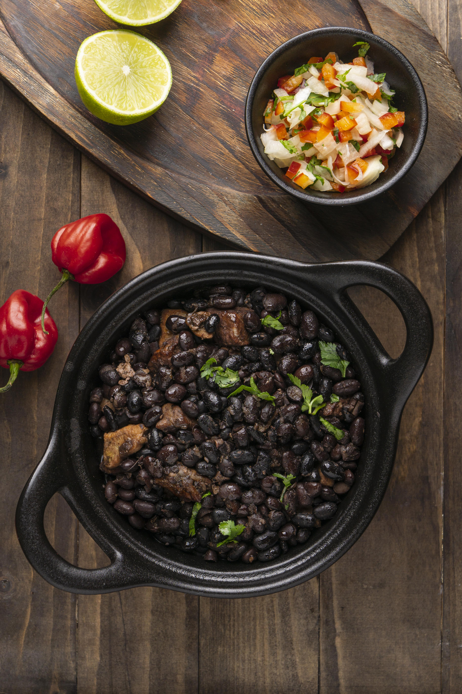

Feijoada
Feijoada is one of Brazil’s most traditional dishes, known for its rich, smoky flavor and comforting heartiness. It’s made from black beans slowly cooked with a variety of meats, creating a deep and savory.
Often served with rice, farofa, and orange slices, feijoada is a true celebration meal, commonly shared with family and friends on weekends.
Ingredients
- 500g black beans
- 300g pork ribs
- 200g calabresa sausage
- 150g bacon
- 1 onion, chopped
- 3 cloves garlic, minced
- 2 bay leaves
- Salt to taste
- Black pepper to taste
- Water (enough to cover beans)
Steps
- Rinse the black beans and soak them for at least 1 hour.
- In a large pot, cook the bacon until crispy, then add the sausage and ribs. Brown everythinglightly.
- Add the chopped onion and minced garlic; sauté until fragrant.
- Add the soaked beans, bay leaves, and enough water to cover everything.
- Cook on medium heat for about 1.5 to 2 hours, adding water as needed.
- Season with salt and black pepper near the end of cooking.
- Serve hot with rice, farofa, and orange slices.
All Recipes